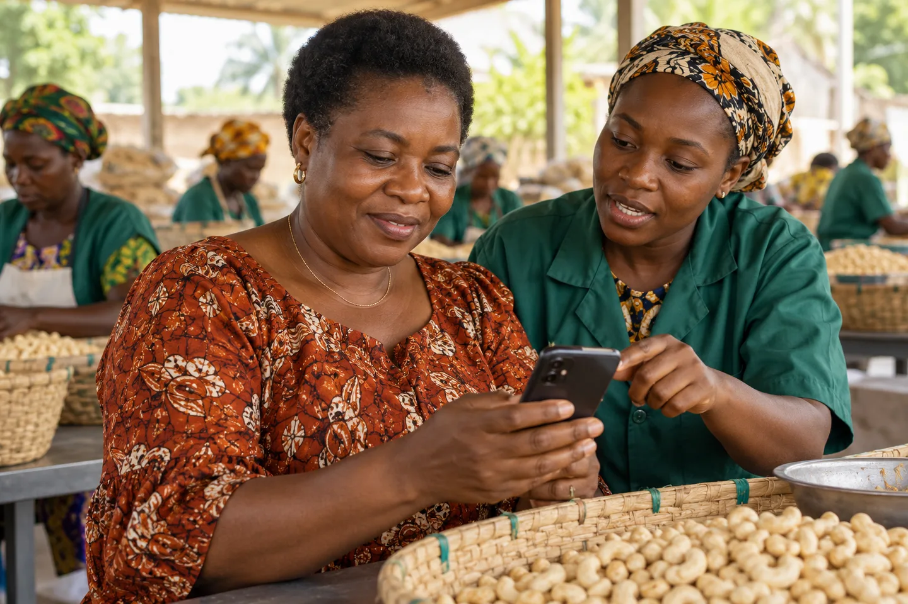
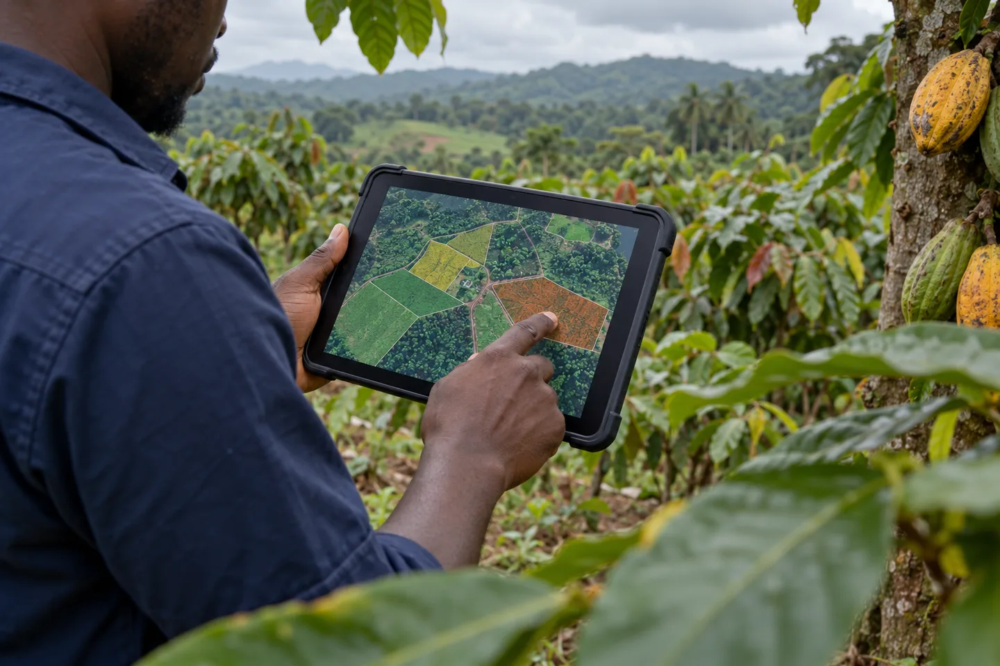

Fondation AWI
African Women Innovation 3.0, initiatrice du programme.
AGIR-IA · AVEC LA FONDATION AWI
Des outils numériques au service de l’entrepreneuriat agricole en Côte d’Ivoire.
Découvrir le projet ↓
Un regard local. De nouvelles perspectives.
FORMATION DU 26 SEPTEMBRE 2026
African Women Innovation 3.0, initiatrice du programme.
Conception et animation de la formation.
Un accompagnement assuré par AgroPulse.
Projet distinct du Fellowship. Les informations fournies restent soumises à la validation de Mme Hélène Nichy.
Découvrir aussi le Fellowship ↗
ET SI NOUS CULTIVIONS VOTRE PROJET ?
Présentez votre projet, votre filière et les défis que vous souhaitez relever.
Cette première version permet de préparer votre demande. Aucun message n’est envoyé : les coordonnées de contact seront ajoutées après validation.